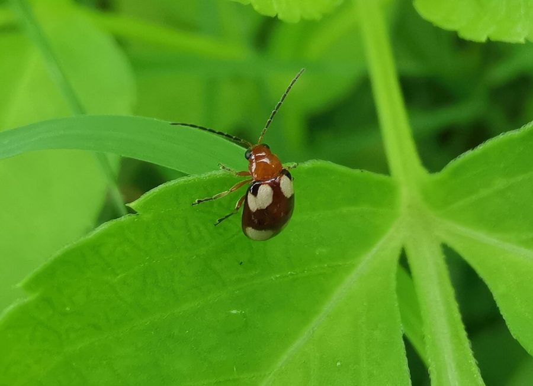

व्हाइट-स्पॉटेड लीफ बीटलWhite-spotted Leaf Beetle
Monolepta signata · Chrysomelidae · INS-0276

- Scientific name वैज्ञानिक नाम
- Monolepta signata (Olivier, 1808)
- Family कुल
- Chrysomelidae
- Hindi हिंदी
- व्हाइट-स्पॉटेड लीफ बीटल
- Local names स्थानीय नाम
- white spotted leaf beetle
- Status here यहाँ की स्थिति
- native
- Movement आवागमन
- Resident, here all year
- Known from कहाँ दर्ज
- Others have published records from the wider Awadh–Purvanchal plain, none yet from Basti–Ayodhya अवध–पूर्वांचल से दूसरों के प्रकाशित अभिलेख, बस्ती–अयोध्या से अभी नहीं
- IUCN IUCN
- not evaluated
- Review समीक्षा
- not yet reviewed
When to look कब देखें
Present all year. साल भर मौजूद।
Tell it apart from इनसे अलग पहचानें
व्हाइट-स्पॉटेड लीफ बीटल / White-spotted Leaf Beetle
Monolepta signata (Olivier, 1808) — Chrysomelidae
व्हाइट-स्पॉटेड लीफ बीटल — भिंडी, लौकी, तोरी, मूंग और बैंगन जैसी फसलों की पत्तियों को छलनी करने वाला एक छोटा और चमकदार पीला-भूरा भृंग (बीतल) है जिसे 'सफेद चित्तीदार पत्ती भृंग' भी कहा जाता है। इसके दोनों पंखों (एलीट्रा) पर दो-दो सफेद या हल्के पीले रंग के गोल धब्बे होते हैं। यह पत्तियों में छोटे-छोटे गोल छेद बना देता है जिसे 'शॉट-होल' नुकसान कहते हैं। बहुत ज्यादा प्रकोप होने पर यह पूरे पौधे की पत्तियों को खाकर केवल नसें छोड़ देता है।
Quick Identification त्वरित पहचान
| Feature | Description |
|---|---|
| Elytral pattern | Pale yellowish-brown to reddish-brown elytra, each bearing two prominent creamy-white oval spots |
| Body outline | Small, elongate-ovate, moderately convex chrysomelid beetle with polished smooth surface |
| Antennae | Slender, filiform antennae extending beyond the middle of the body, pale with darker tips |
| Pronotum | Smooth, transverse yellowish pronotum with gently rounded lateral margins and fine punctures |
| Feeding symptom | Foliage peppered with numerous small, circular "shot-hole" perforations clean through leaf blades |
Small, shiny yellowish-brown leaf beetle recognized by its smooth body, each elytron bearing two conspicuous oval white spots, and its characteristic shot-hole chewing damage on crops.
Field tip: Look on young okra or bean leaves in early morning; small oval yellowish beetles with two white spots per wing cover will be grazing holes.
हिंदी: छोटा चमकीला पीला-भूरा भौंरा जिसके प्रत्येक पंख पर दो-दो सफेद धब्बे होते हैं। इसके खाने से पत्तियों में बंदूक की गोली जैसे छोटे-छोटे गोल छेद बन जाते हैं।
Morphology आकारिकी
Biometrics from open entomological literature:
| Feature | Characteristic | Source |
|---|---|---|
| Body contour | Elongate-ovate, moderately convex, polished glabrous dorsal surface | Literature |
| Elytral spots | Four distinct pale white or creamy-yellow spots: one subbasal and one subapical on each elytron | Literature |
| Pronotum | Transverse, smooth, pale testaceous-yellow, finely and sparsely punctate | Literature |
| Legs | Slender, pale yellowish, with hind femora slightly thickened for hopping | Literature |
| Typical dimension | Measurement not available in consulted open sources. | Open sources |
The adult beetle is small, oval, and delicately built with a glossy sheen. The head is pale testaceous, bearing prominent black compound eyes. The antennae are slender and filiform, inserting close together on the frons. The pronotum is transverse, convex, and pale yellowish-brown. The elytra are broader at the base than the pronotum, parallel-sided, and rounded at the apex. The ground colour of the elytra is pale yellowish-brown to reddish-ochraceous, adorned with four large, well-defined oval creamy-white spots: a pair placed near the base and a second pair situated before the apex. The ventral surface and slender legs are pale yellowish.
हिंदी: इसका शरीर छोटा, चिकना और गोल-अंडाकार होता है। सिर और सीना हल्के पीले होते हैं और आंखें काली होती हैं। पंखों के कड़े खोल पर कुल चार सफेद गोल धब्बे होते हैं—दो आगे और दो पीछे। इसकी पिछली टांगें कूदने में मदद करती हैं।
Behaviour & Ecology व्यवहार और पारिस्थितिकी
Adult beetles are diurnal folivores that become active in early morning as dew evaporates. They feed openly on the upper and lower surfaces of tender leaves, using their chewing mandibles to excise small circular discs of leaf tissue. This creates the diagnostic shot-hole defoliation pattern. When disturbed, they drop instantly to the ground in a death-feigning reflex (thanatosis) or execute sudden, vigorous hops to escape predators. Females lay small clusters of yellow eggs in moist soil crevices near the root crowns of host plants. The soil-dwelling larvae feed externally on rootlets and decaying organic matter before pupating in an earthen cell.
हिंदी: यह दिन में पत्तियों को खाने वाला कीड़ा है। यह पत्ती में गोल-गोल छेद करके उसे छलनी बना देता है। छेड़े जाने पर यह मरने का नाटक करके तुरंत जमीन पर गिर जाता है या फुर्ती से उछल जाता है। इसके बच्चे जमीन की मिट्टी में जड़ों को खाते हैं।
Life Cycle / Phenology जीवन चक्र
Produces multiple generations throughout the warm months from March to October. Eggs deposited in soil hatch in about a week. The slender, grub-like larvae develop underground over two to three weeks, feeding on fine root hairs without causing noticeable above-ground harm. Mature larvae construct a small oval cell in the topsoil where they pupate. Adults emerge within a week and fly up to colonize above-ground crop canopies. Adults feed voraciously for several weeks, mating repeatedly. The species overwinters in the adult stage in dry soil litter and field bund vegetation.
हिंदी: गर्म मौसम में इसका जीवन चक्र एक महीने में पूरा हो जाता है। मादा मिट्टी में अंडे देती है और इसके बच्चे जमीन के भीतर रहकर जड़ों के पास पलते हैं। प्यूपा से निकलने के बाद वयस्क भृंग फसल की पत्तियों पर आकर छेद करने लगते हैं।
Host Plants or Prey आहार
A highly polyphagous pest with a wide host range spanning several botanical families. Favoured cultivated crops across eastern Uttar Pradesh include Brinjal (Solanum melongena), okra (Abelmoschus esculentus), bottle gourd, sponge gourd, bitter gourd, pigeonpea, mungbean, cowpea, and beetroot. It also grazes on ornamental plants like dahlia and wild weeds along field borders.
हिंदी: यह अनेक प्रकार की सब्जियों का दुश्मन है। भिंडी, लौकी, तोरी, करेला, अरहर, मूंग और बैंगन की नई पत्तियों को यह बहुत नुकसान पहुंचाता है। इसके अलावा यह बगीचे के फूलों पर भी पाया जाता है।
Predators / Natural Enemies शत्रु
Natural biological control is provided by farmland predators. Generalist predators including praying mantises, assassin bugs, robber flies, and hunting spiders such as jumping spiders and lynx spiders ambush feeding adult beetles on foliage. Small insectivorous farmland birds readily capture flying beetles. Ground beetles and predatory mites consume eggs and pupae in the soil.
हिंदी: खेत में रहने वाले मेंटिस, शिकारी बग और कूदने वाली मकड़ियां पत्तों पर बैठकर इन भृंगों को पकड़ लेती हैं। खेत के शिकारी पक्षी उड़ते हुए इन भृंगों को अपनी चोंच में दबोच लेते हैं।
Agricultural / Human Relevance कृषि प्रासंगिकता
A common and persistent nuisance pest across vegetable growing belts in northern India. Seedlings and young plants are particularly vulnerable; dense populations can riddle young foliage with thousands of perforations, stunting growth and severely reducing the photosynthetic capacity of the crop. Recommended integrated pest management emphasizes deep summer ploughing to invert topsoil and expose pupae to scorching heat and predatory birds, installing yellow sticky traps around crop borders, spraying neem-based bio-repellents (such as neem oil or NSKE) to deter feeding, and hand collection using sweep nets during early morning hours when beetles are sluggish.
हिंदी: नई उगी सब्जियों पर इसका हमला बहुत नुकसान करता है जिससे पौधे कमजोर रह जाते हैं। इससे बचाव के लिए गर्मियों में खेत की गहरी जुताई करनी चाहिए ताकि मिट्टी में दबे प्यूपा धूप से नष्ट हो जाएं। इसके अलावा नीम के तेल का छिड़काव और पीले चिपचिपे ट्रैप लगाना बहुत फायदेमंद होता है।
Expected Locally स्थानीय रूप से अपेक्षित
Not a field record. Written from published accounts for eastern Uttar Pradesh. No confirmed local sighting yet — if you have seen it, that is what the atlas needs.
अभी तक स्थानीय पुष्टि नहीं। यह विवरण प्रकाशित स्रोतों से है, किसी अवलोकन से नहीं।
Widely distributed in vegetable gardens, commercial pulse acreage, and riverbed farms throughout eastern Uttar Pradesh. Observers in Basti and Ayodhya should inspect young okra and cucurbit crops in morning hours between April and October for shot-hole damage and feeding beetles.
GBIF holds published records from the wider Awadh–Purvanchal plain, none yet from Basti–Ayodhya.
A first local record for the atlas would be a clear photograph showing diagnostic features, accompanied by date, time, and precise location coordinates sent through the project's About page.
हिंदी: यह बस्ती और अयोध्या के सभी सब्जी उत्पादक क्षेत्रों में भिंडी और लौकी की पत्तियों पर बहुत आसानी से मिल सकता है। चार सफेद धब्बों वाले इस छोटे भौंरे की साफ फोटो लेकर एटलस को भेजें।
Distribution वितरण
Global range: Widespread across the Oriental region, native to India, Sri Lanka, Nepal, Bangladesh, and Myanmar.
In India: Recorded from almost all states and union territories, abundant across northern and eastern plains.
In Uttar Pradesh: Distributed universally across all agro-ecological zones where vegetables and pulses are cultivated.
In Basti district / eastern UP: Documented across all vegetable-producing blocks in eastern Uttar Pradesh based on state agricultural university extension reports.
हिंदी: यह भारत, नेपाल, श्रीलंका और बांग्लादेश में पाया जाता है। उत्तर प्रदेश के सभी जिलों के सब्जी और दलहन उत्पादक क्षेत्रों में यह बहुत आम है।
Research Questions शोध प्रश्न
- How do neem seed kernel extract (NSKE) applications compare to companion trap cropping (with mustard) in repelling Monolepta signata on okra?
- What depth of summer soil tillage produces the highest mortality of overwintering leaf beetle pupae in eastern UP alluvial soils? / क्या गर्मियों में गहरी जुताई करने से मिट्टी में दबे इस भृंग के प्यूपा नष्ट हो जाते हैं?
- Which cucurbit cultivars demonstrate morphological leaf pubescence that deters shot-hole grazing by adult beetles?
- A schoolchild can look at an okra leaf with round holes to see if a small yellow beetle with four white spots is present / क्या कोई बच्चा भिंडी के छेद वाले पत्तों पर चार सफेद धब्बे वाले छोटे पीले भौंरे को देख सकता है?
- How does intercropping pulses with aromatic herbs affect adult beetle colonisation rates?
हिंदी: क्या नीम का घोल छिड़कने से यह कीड़ा पत्तियों को खाना बंद कर देता है? क्या बच्चे छलनी जैसी पत्तियों पर इस चार धब्बे वाले भौंरे को पहचान सकते हैं?
Similar Species मिलती-जुलती प्रजातियाँ
| Species | How to tell apart | हिंदी | |
|---|---|---|---|
| Red Pumpkin Beetle \ | Aulacophora foveicollis | Larger oblong orange-red chrysomelid beetle feeding on cucurbits; lacks white elytral spots | लाल कद्दू भृंग आकार में बड़ा और नारंगी-लाल होता है, उसके पंखों पर कोई सफेद धब्बे नहीं होते |
| Monolepta hieroglyphica | Related galerucine leaf beetle with different elytral colour pattern and maculation | इसी वंश का दूसरा पत्ती भृंग जिसके पंखों पर धब्बों का रंग और बनावट अलग होती है |
Field rule: Small, shiny yellowish-brown leaf beetle with two oval white spots on each wing cover, causing characteristic shot-hole perforations on leaves.
हिंदी: छोटा चमकीला पीला-भूरा भौंरा जिसके प्रत्येक पंख पर दो-दो सफेद धब्बे हों और जो पत्तियों में गोल-गोल छेद बनाता हो।
Taxonomy & Classification वर्गीकरण
Original description. Olivier (1808), Entomologie, ou histoire naturelle des insectes: Coléoptères, vol. 6, p. 665; described under the genus Galeruca.
Subspecies. Monotypic species. Jacoby (1908) and Maulik (1936) catalogue it under the genus Monolepta.
Family and order placement. Belongs to the leaf beetle family Chrysomelidae (subfamily Galerucinae), order Coleoptera, class Insecta.
Phylogenetic notes. Member of the species-rich flea beetle and leaf beetle tribe Luperini, characterized by elongated antennae, exposed pygidium, and distinct thoracic margination.
IUCN status rationale. Not currently evaluated on the IUCN Red List of Threatened Species.
हिंदी: इसका वैज्ञानिक विवरण ऑलिवियर ने 1808 में दिया था। यह क्रिसिमेलीड्डी (पत्ती भृंग) कुल का सदस्य है और कोलियोप्टेरा गण में आता है।
Photo Gallery फोटो गैलरी
No photos yet — add field photos to media/species/white_spotted_leaf_beetle/ and run node scripts/sync_photos.js.
Photos needed आवश्यक फोटो
- [ ] Adult beetle grazing on leaf showing four white dorsal spots (पत्ते पर बैठा वयस्क जिसमें चार सफेद धब्बे दिखें)
- [ ] Okra or cucurbit foliage exhibiting characteristic shot-hole perforation damage (छलनी हुई पत्तियां)
- [ ] Multiple beetles congregating on young vegetable seedling (पौधे पर इकट्ठा भृंग)
References संदर्भ
- Original description: Olivier, A. G. (1808). Entomologie, ou histoire naturelle des insectes: Coléoptères. Vol. 6. Desray, Paris, p. 665.
- Jacoby, M. (1908). The Fauna of British India, Including Ceylon and Burma: Coleoptera (Chrysomelidae). Vol. 1. Taylor & Francis, London.
- Maulik, S. (1936). The Fauna of British India, Including Ceylon and Burma: Coleoptera (Chrysomelidae: Galerucinae). Taylor & Francis, London.
- National Institute of Plant Health Management & Directorate of Plant Protection, Quarantine and Storage. (2014). AESA Based IPM Package for Okra. Department of Agriculture & Cooperation, Ministry of Agriculture, Government of India. URL: https://niphm.gov.in/IPMPackages/Okra.pdf.
- GBIF Occurrence Data — Monolepta signata, India (2025).
Source file: species/fauna/insects/white_spotted_leaf_beetle.md